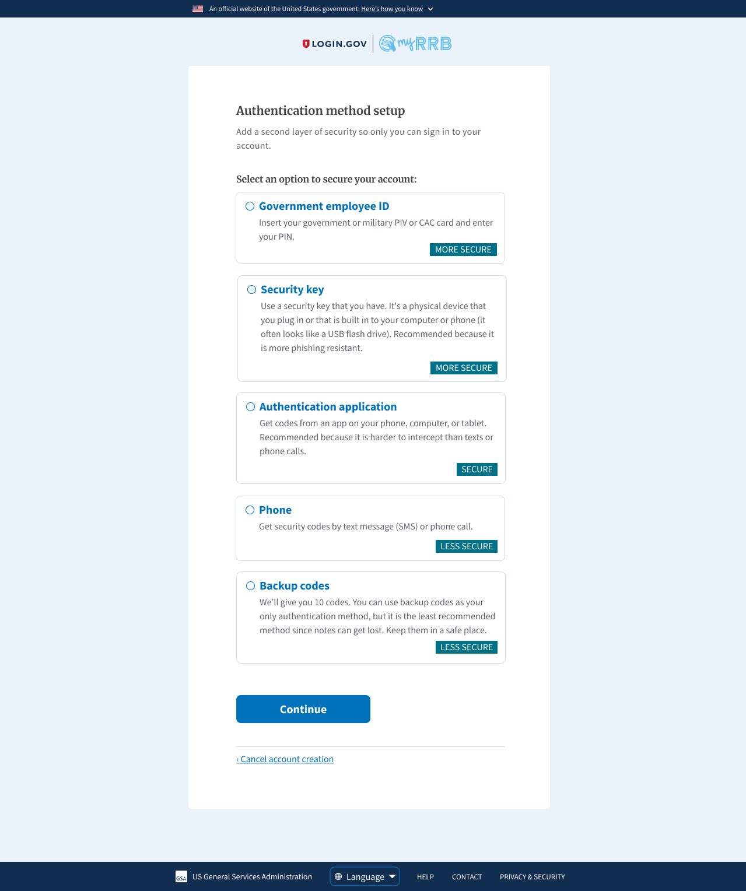
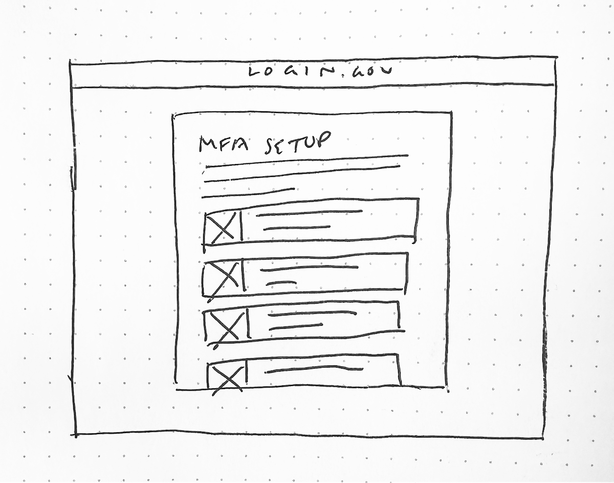
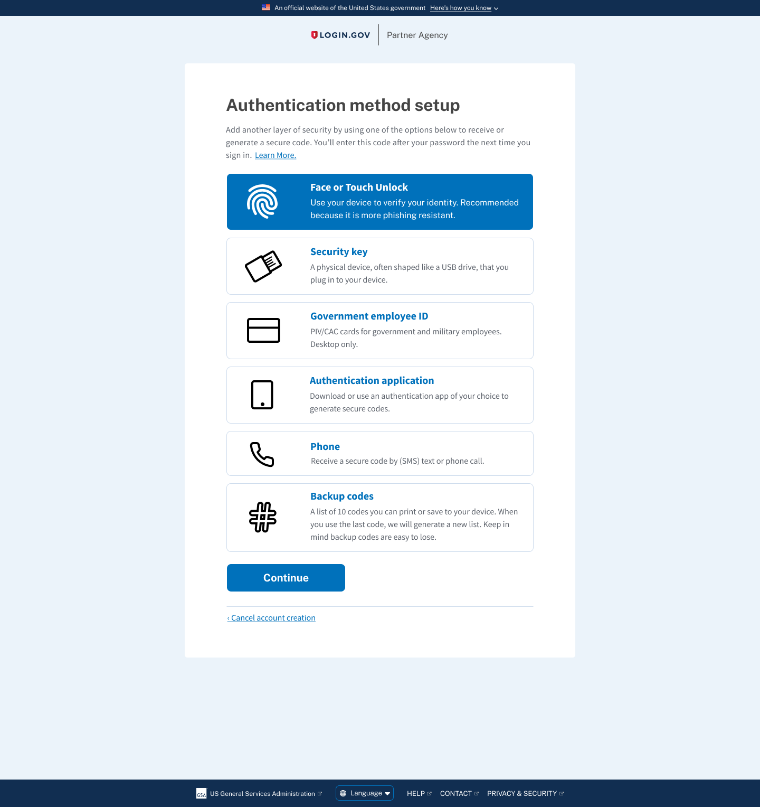
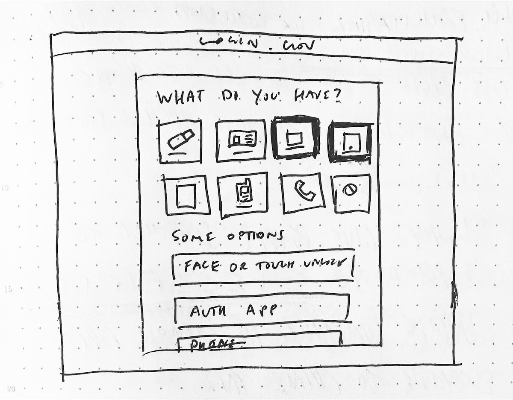
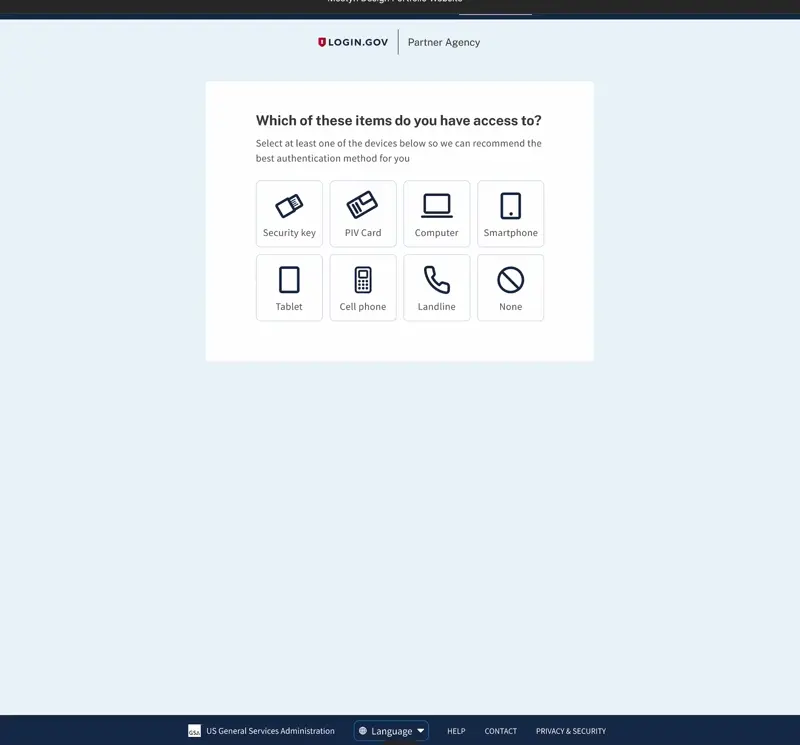
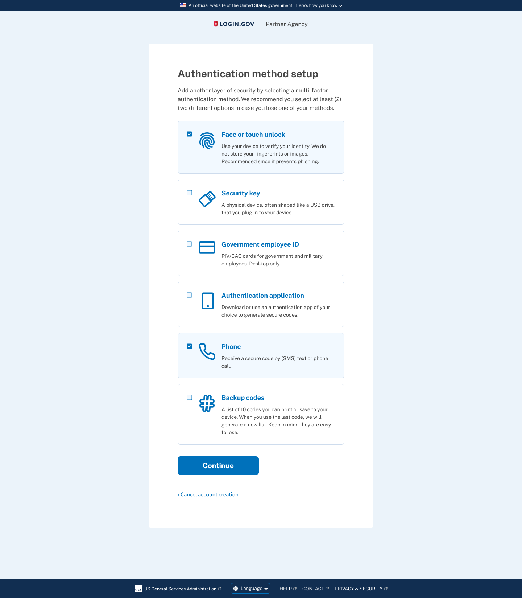
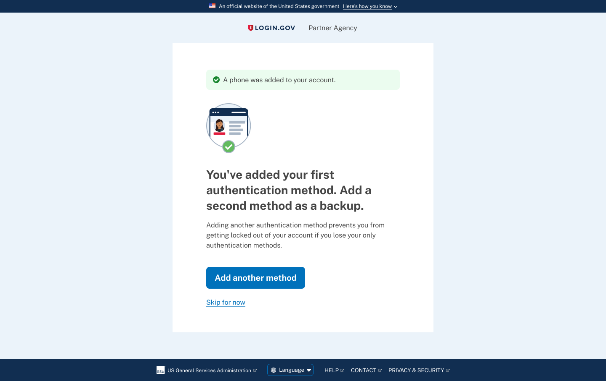

Designing resilient authentication for Login.gov users
Helping people confidently choose multi-factor authentication, and making sure losing one method doesn't lock them out of government services.
- 83.7% → 92.8%account creation success
- 3.6% → 34.5%new users with 2+ MFA methods

Background
When I joined Login.gov, I was assigned to Team Katherine, which oversees account creation and management. Our team was tasked with improving the authentication setup experience to increase comprehension and adoption of more secure authentication methods, improving user account security and recoverability.
My Role
I led the UX and content design efforts, partnered closely with product and research, designed and prototyped test directions, and synthesized usability findings into recommendations that shipped to improve account creation success and security.
The Challenge
In 2021, Login.gov required users to have at least one Multi-Factor Authentication (MFA) method. The previous labeling system, which designated MFA methods as more or less secure, made common options like one-time phone codes seem unsafe.
Furthermore, users could only set up one MFA method during account creation and often didn't realize they could add more later. Having only one MFA method increases the risk of being locked out, requiring account deletion and recreation.
Our challenge was to enable users to:
- Confidently choose MFA methods
- Recover when an MFA method fails
Part 1: Making authentication understandable
Prior usability studies found that the labeling negatively affected user confidence in their authentication method choice. Most users did not know what authentication apps or security keys were and felt their phone may not be a strong way to secure their account.
Our team needed to design a new authentication setup flow that:
- Increased user confidence in their MFA method selection
- Improved user understanding of MFA methods
- Decreased user time to making an MFA selection

Methodology
My design lead, Julia Solórzano, and I conducted unmoderated usability testing to learn more about how end users select MFA methods. The test was performed via UserTesting.com. Participants independently walked through a series of tasks and questions as they navigated two interactive prototypes.
The team conducted 12 usability tests in 2 groups, using 2 prototypes that showed both design versions in different arrangements in order to diminish recency/primacy bias.
Prototype A: Illustration Layout
To give new users more context I wanted to provide them with illustrations that accompanied each authentication method.
The hypothesis was that users could scan through the options faster to make a decision.


Prototype B: Questionnaire Layout
Using the principle of progressive disclosure, I wanted to have users select one or more devices in a list instead of having to read through each authentication option.
The hypothesis was that users would have an easier time selecting the devices they were familiar with before being presented with authentication options. The idea was to eliminate irrelevant MFA methods that the user couldn't set up.


Usability Testing Insights
All participants were able to successfully select an authentication method and comprehend how it secured their Login.gov account.
8 out of 12 participants preferred the “Illustration” direction over the “Questionnaire” direction since it offers descriptions up front.
I'm going to go with the first one (Illustration) since it has helpful little descriptions underneath... For me I know what it means but I'm sure other people could find it helpful.
4 of 6 participants from Group B had positive comments on the Illustration layout.
This page is providing more descriptive info as to what each icon represents. It's explaining what they are and how it works.
4 participants from Group A and 1 participant from Group B had positive comments on the Questionnaire layout.
This layout (Questionnaire) is really nice and straightforward, I don't have to scroll to see all of the options which is nice especially if I was on a smaller screen.
Part 1: Outcomes & Impact
We selected the "Illustration" authentication page, despite good feedback for both options, since participants felt it offered better upfront context. The "Questionnaire" was less successful, as some participants found it unclear about the nature of each device.
From January to February 2022 there was an 83.7% account creation success rate. In March 2022 there was an improved 92.8% success rate after the launch of the redesigned MFA setup page.
Though improving comprehension increased successful account creation, research and support data showed a second failure point: users who only set up one authentication method were still vulnerable to account lockout.
Part 2: Designing for resilience
After we removed the labels, added the new illustrations, and simplified MFA descriptions, we still had to solve the issue of users getting locked out of their account if they lost access to their only MFA method.
For this round of work, our goals were to:
- Increase the number of users who add a second method
- Decrease the number of account lockouts
- Decrease the number of Login.gov support tickets
Methodology, Part 2
We conducted 12 unmoderated usability tests via UserTesting.com.
We used a developer sandbox site instead of a prototype to get a better understanding of how people would move through the actual account creation and MFA selection process.
Enable MFA multi-select
Our first move was to switch the radio button to a checkbox. This minor change subtly indicates to users they can select more than one MFA method tile.
We then added "We recommend you select at least (2) two different options in case you lose one of your methods." to explain the risk of only having one MFA method.

Add an interstitial MFA upsell page
In order to capture users who only selected one MFA method, we decided to add an interstitial "upsell" page after a user successfully sets up their first authentication method.
We further emphasize that adding another MFA method would prevent them from being locked out from their account in case they lose one of their methods.

The MFA selection and setup flow
The video below shows the interstitial upsell screen popping up only if a user selects one MFA method. The primary call to action "Add another method" takes the user back to the authentication selection page to add another method.
Usability Testing Insights, Part 2
All participants chose Phone/SMS as an MFA method. Of those participants, 7 of 12 selected 2 MFA methods on the first selection screen. Of those users:
- 3 of 12 participants selected 2 MFA methods (Phone and Backup codes) on the first selection screen and set them both up successfully.
- 4 of 12 participants selected 2 MFA methods on the first selection screen but only set up 1 MFA method, by either skipping or failing to set up the 2nd MFA method.
7 of 12 participants who selected and set up Phone/SMS ended up with that as their only MFA method.
Let's just go with a simple one with our phone number, and we'll only do one of those [MFA methods].
5 of 12 participants selected only 1 MFA method on the first selection screen.
I did not select more than one cause that would drive me crazy! I'm more concerned about forgetting all my passwords than security as much as I probably shouldn't.
Part 2: Outcomes & Impact
The text "We recommend you select two (2) MFA methods..." led a majority of participants to select at least two MFA methods, suggesting a good starting point for increasing multiple MFA adoption.
After Login.gov released the multi-select MFA feature and interstitial upsell page on July 14, 2022, new users with two or more MFAs at account creation rose from 3.6% (June 2022) to 34.5% (November 2022), an increase of 30.9 percentage points. This reduced the likelihood of users getting locked out.
Subsequent efforts involved notifying existing single-MFA users to add another method, both after sign-in and via email.
System-level Impact
This work addressed two common points where users are most likely to lose access to government services: confusion during authentication setup and lockout caused by only having a single authentication method.
By designing clearer MFA selection and encouraging redundancy early in account creation, we improved both successful enrollment and long-term account reliability.
The result is an authentication system that prioritizes access, trust, and resilience, preventing usability failures that have real consequences for the people who rely on Login.gov to access their benefits and services.